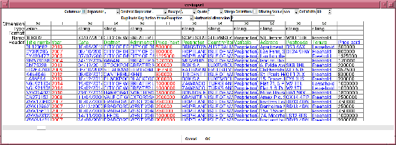

Next: Sliders Up: Variables Previous: Initial conditions
There is also a simple functional language, which allows for the
generation of tensor-valued operations. These functions take the form
func
 where
where  is the desired rank, and
is the desired rank, and
 etc are the dimensions of the tensor. Available
functions include:
etc are the dimensions of the tensor. Available
functions include:
| name | description |
one |
the tensor is filled with `1' |
zero |
the tensor is filled with `0' |
iota |
the arithmetic sequence  |
eye |
diagonal elements filled with `1', offdiagonal `0' |
rand |
tensor filled with random numbers in the range  |
eye is equivalent to one for vectors.
rand generates different random numbers each time the simulation
is reset, and uses the clib rand() function.